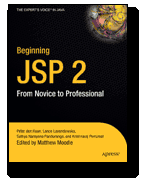
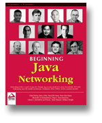
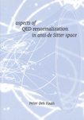

Peter den Haan
Software architect and technical lead
I lead a small engineering team on a low-code GenAI product at Accenture, and review most of what the wider project ships. Before this I helped build a quantum computing practice from nothing. Before that I spent a decade as a church minister. Before that I wrote Java books and led development teams. Further back, a doctorate in theoretical physics, which is still how I think.
What connects them is a habit of going deep into unfamiliar territory and coming back able to explain it.
I care about designs that survive contact with reality, and about helping developers become the kind of engineer people trust with hard problems.
Career
Three careers, or one, depending how you count.
Two stretches still do a lot of the work. Two years of Clojure at QFI is where I learned what functional programming actually buys a design. Quantum computing, twenty years after the doctorate, was the last time I took a field apart and rebuilt it from scratch. The ministry decade did something different: a weekly obligation to take something profound and make it clear and practical to people with no background in it, which is most of what design review turns out to be.
Now
Since October 2024 I have led the technical side of a low-code generative AI product. TypeScript and React at the front, Python, FastAPI and Postgres behind it. I do the architecture and most of the design work, manage the team directly, and review the majority of the project's pull requests. Alongside that I contribute to Accenture's Centre for Advanced AI and to the UK Health & Public Service Data & AI practice.
The tools matter less than people think. What I actually do is decide what to build, work out why the hard parts are hard, and make sure the people around me get better at both.
Background
-
2023–
AI/ML Computational Science Manager Accenture, Centre for Advanced AI
Team lead and researcher. Generative AI, agentic systems, security and governance. Led an applied research project on tensor networks for object detection in satellite imagery. Technical lead on the current product since October 2024.
-
2021–23
Quantum Computing Specialist Objectivity, acquired by Accenture in 2024
First member of a small team headhunted to build a quantum computing practice from nothing: research, client work and industry partnerships. Spoke on the state of quantum annealing at Conf42 in 2023.
-
2016–21
Minister Rugby, then Leamington Spa Baptist Church
Strategy, governance and budgets with the leadership team; acting minister from 2018. Weekly public speaking to an audience of non-specialists.
-
2013–15
Senior Software Engineer QFI Consulting
Two years of full-stack Clojure. Statistical, simulation and analysis tools for the NHS, built on the Theory of Constraints. Domain-driven design, functional programming.
-
2008–13
Assistant Curate Church of England
The departure of all senior staff left me the team's only full-time pastor, with the leadership responsibilities that came with it.
-
1999–2005
Principal Systems Engineer Objectivity
Technical lead and mentor for the Java team. Bespoke development for Shell Finance, IPC Media, the FA Premier League and Primark. The company's public face in the wider Java world.
-
1997–99
Junior Systems Engineer Radboud University
Design and development of an ISP's back-office system.
Writing and speaking
-
Quantum annealing: state of play
Conf42 Quantum Computing, 2023. Talk and video, slides, and the benchmarking suite behind it.
-

Beginning JSP 2.0
Apress, 2004. Co-authored.
-

Beginning Java Networking
Wrox, 2001. Co-authored.
-

Aspects of QED renormalization in anti-de Sitter space
Doctoral thesis. Nijmegen University Press, 2001. Download PDF.
Technical reviewer and editor for Addison-Wesley, Wiley and Osborne McGraw-Hill, 2002–05. Moderator on JavaRanch.
Qualifications
- 2023 Quantum Computation Associate, IBM
- 2008 BA Theology, Wycliffe Hall, University of Oxford
- 2001 PhD Theoretical Physics, Radboud University Nijmegen
- 1992 MSc Theoretical Physics, Radboud University Nijmegen